- Home ›
- C言語 入門 ›
- C/C++言語の開発環境
Visual Studio Community 2017のダウンロードとインストール
C言語及びC++の開発環境としてMicrosoft社が提供している統合開発環境のVisual Studioを利用します。Visual Studioには「Visual Studio Community 2017」「Visual Studio Professional 2017」「Visual Studio Enterprise 2017」の3つが用意されていますが、今回は個人開発者であれば無償で利用可能な「Visual Studio Community 2017」のインストール方法について解説します。
目次
Visual Studio Communityのライセンスについて
先に記述した通りVisual Studioには無償のものと有償のものが用意されています。今回利用する「Visual Studio Community 2017」は無償で利用でき、有償版のものと機能はほとのど変わらないのですが、利用するには条件があります。
Visual Studio Community の利用可能者
Visual Studio Community の製品使用権は以下に説明するような顧客セグメントと利用シナリオに依存します。
個人開発者
あらゆる個人開発者は Visual Studio Community を利用でき、無償または有償のアプリケーションを作成できます。
組織
・以下のシナリオでは Visual Studio Community を利用者数に制限なく利用することができます:
教室の研修環境、学術的調査、オープン ソース プロジェクトへの貢献
・その他のすべての利用シナリオ:
エンタープライズではない組織において 5 ユーザーまでは Visual Studio Community を利用できます。エンタープライズ組織 (PC 台数 250 台以上または年商 100 万ドル以上) は上記の教室の研修環境、学術的調査、オープン ソース プロジェクトへの貢献以外では従業員や請負契約者ともに利用を認められません。
Visual Studio 2017に関する詳しいライセンスについては次のURLを参照されて下さい。
Microsoft Visual Studio のライセンス
Visual Studio Community 2017のダウンロード
Visual Studio Community 2017のダウンロードを行います。次のURLへアクセスしてください。
https://visualstudio.microsoft.com/ja/
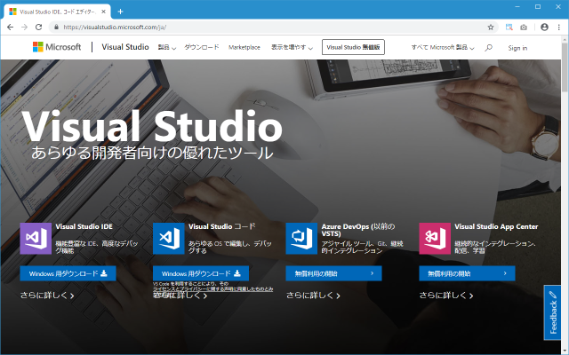
「Visual Studio IDE」の下にある「Windows用ダウンロード」と書かれた箇所にマウスを合わせてください。次のようにメニューが表示されますので「Community 2017」をクリックしてください。
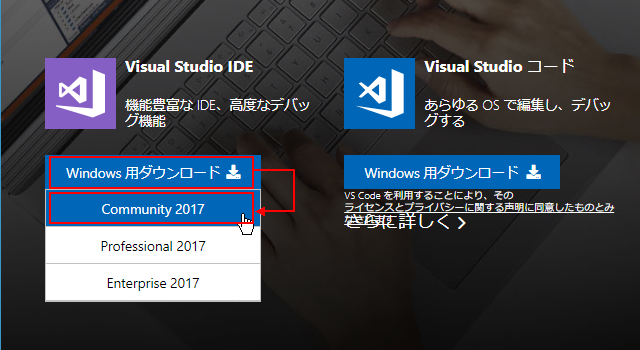
インストール用ファイルのダウンロードが自動的に開始されます。任意の場所へ保存しておいてください。
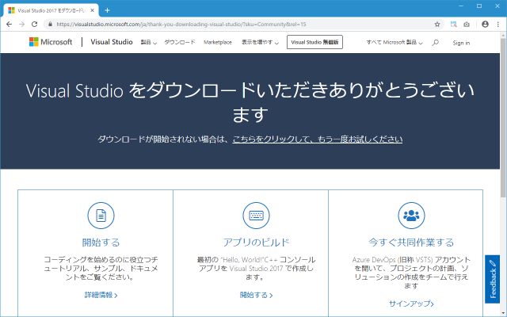
Visual Studio Community 2017のインストール
続いてインストールを行います。先ほどダウンロードしたファイルをダブルクリックして実行してください。最初に次のような画面が表示されますので「続行」をクリックしてください。
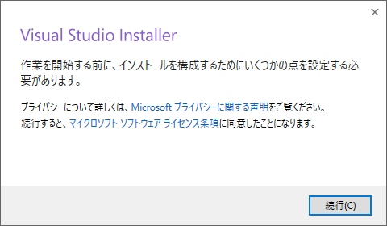
プログラム本体のダウンロードとインストールが開始されます。
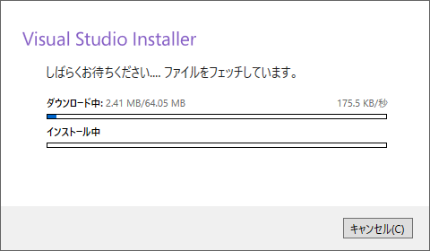
次のような画面が表示されます。
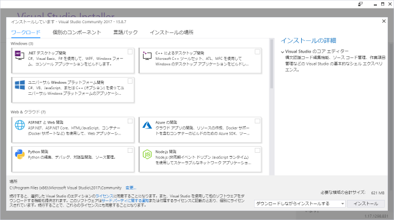
Visual Studio Communityを使って開発するアプリケーションに合わせてワークロードを選択してください。なおインストールした後でもワークロードは追加することができます。今回は「.NET デスクトップ開発」と「C++ によるデスクトップ開発」をチェックしました。
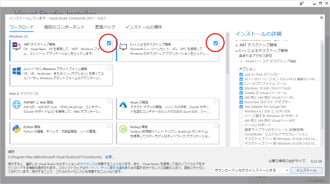
なおインストールするディレクトリを変更したい場合には「インストールの場所」タブをクリックし、インストール先を変更してください。
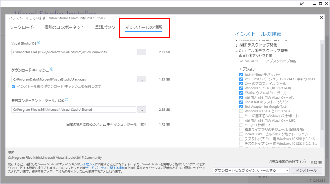
ワークロードの選択やインストール場所の変更が終わりましたら画面右下に表示されている「インストール」をクリックしてください。
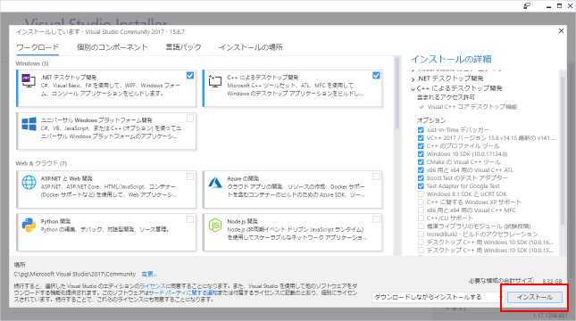
ダウンロードおよびインストールが再開します。
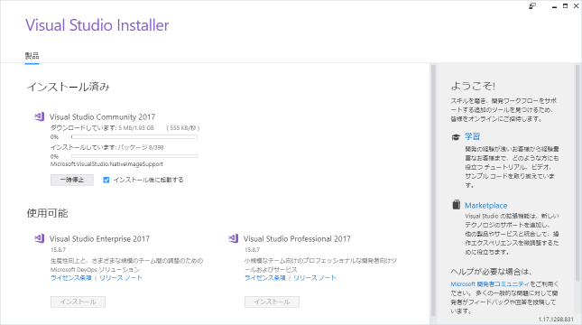
ダウンロードおよびインストールが完了すると次のような画面が表示されます。一度Windowsを再起動してください。
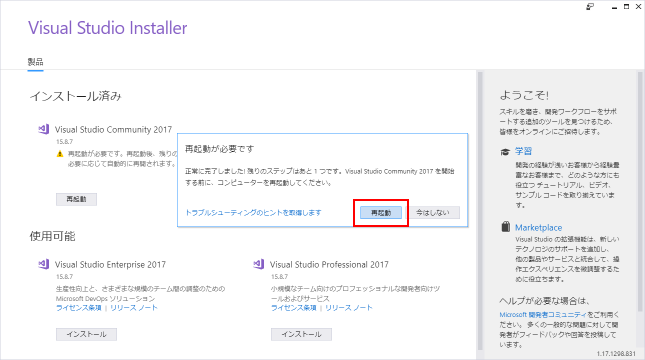
これでVisual Studio Community 2017のダウンロードおよびインストールは完了です。
( Written by Tatsuo Ikura )

著者 / TATSUO IKURA
初心者～中級者の方を対象としたプログラミング方法や開発環境の構築の解説を行うサイトの運営を行っています。